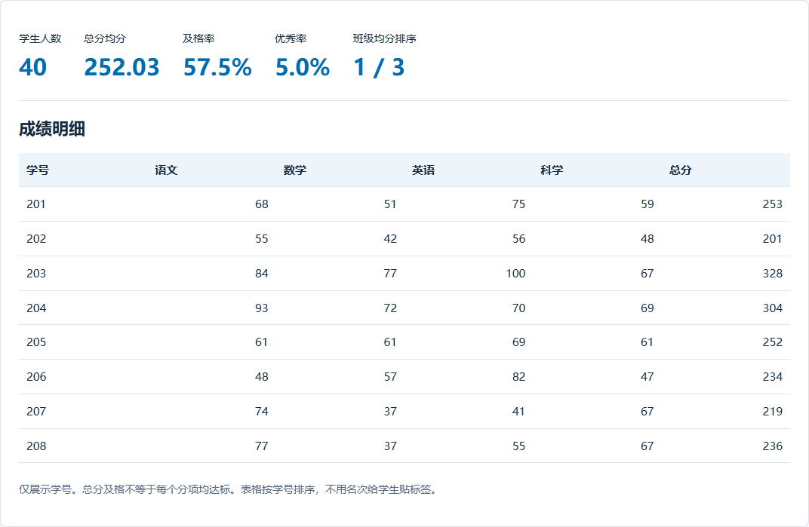

三班综合成绩分析
核对班级排名，比较四科与三次测评的变化。


复制到WorkBuddy
请分析附件综合成绩模拟数据，按三次测评分别计算3个班的总分均分与四科均分，给出班级排名。每次120人，四科各100分，总分400，240分及格。用柱形图比较11月班级均分，用折线图展示三次变化，再提出3条教学建议。
复现方法
- 上传模拟成绩表，复制提示词。
- 核对11月班级排序与2班均分，再读趋势和教学建议。
使用要点
11月2班均分为252.03，位列第一；统计保留人数和满分口径；趋势结合试卷难度与课堂情况解读。
扩展提示词
请列出11月2班总分均分的计算过程，并说明四科中哪一科最值得进一步看题目。
适用与扩展
小学：用学号、技能达成记录代替公开排名；初中各科：增加题目得分和知识点标签后再做错因分析。